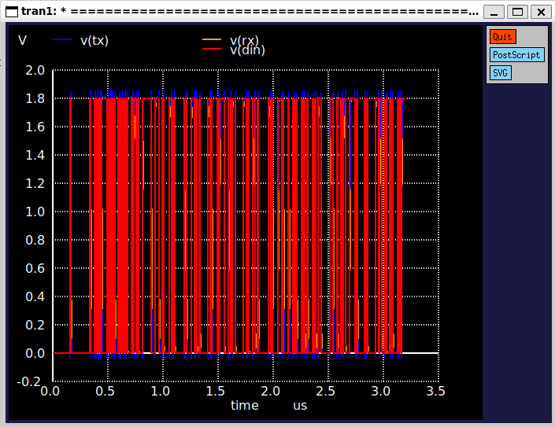

Real Eye Diagram: Skywater PDK
So last lab we saw the comically perfectly square eye diagram.
This time we're going to use use Cadence tools to go from:
RTL -> Logic Gates -> Standard Cells -> Place and Routing -> Eye Diagram
We'll see the true eye diagram and if time permits it to me, we'll try to purposely close it by ramping up the bit rate.
One interesting image I wanted to show from the High Speed Links Texas A&M Course (https://people.engr.tamu.edu/spalermo/ecen720.html):

We can see how with good simulation we can get close to the real thing. Also how we can improve the width and height of the eye. More on that later though. Let's put a pin in it for now.
Load Skywater PDK into Genus
cd .. command yourself until you're inside Lab1_Serial_vs_Parallel and outside Serdes_TxRx.
command ls should show 2 directories Parallel_Tx and Serdes_TxRx
We'll need to download the SkyWater PDK (No the whole she-bang, just what we need):
cd INTO Serdes_TxRx
Now open Genus with: genus
Verify with:
get_db current_design .name
You should see something like: top_level_serdes
RTL -> Logic Gates -> Standard Cells
Now let's make a 100Mhz Clk.
create_clock -name SERDES_CLK -period 10 [get_ports CLK]
Now, let's synthesize to Logic Gates
RTL -> Logic Gates
syn_generic
We can see the logistics with
report_area
Now, let's map the gates to cells
Logic Gates -> Standard Cells
syn_map
Logistics Check:
report_gates
report_area
report_timing
We have our Netlist in Genus. Now we have to export the Netlist.
exec mkdir -p genus_out
write_hdl > genus_out/top_level_serdes_mapped.v
write_sdc > genus_out/top_level_serdes.sdc
The SDF File
Now we need an SDF File. Which will give us the timing contrainsts of these SkyWater130 standard cells, so that we can simulate it.
You can now exit genus with:
exit
What we've done so far:
SystemVerilog RTL ↓ Genus ↓ SKY130 gates ↓ mapped Verilog + SDF timing
- In the terminal we can run:
cat genus_out/top_level_serdes_mapped.v
To see the verilog file with the SkyWater Standard Cells
Xcelium doesn't know what to do with these Standard Cells, so we have to give it the timing information.
git clone --depth 1 https://github.com/google/skywater-pdk-libs-sky130_fd_sc_hd.git sky130_sc_hd
- ls sky130_sc_hd
Should reveal 3 directories: cells, models, timing
git clone https://github.com/maganamon/sky130_models.git
cp tb_top_level_serdes.sv tb_gate_level_serdes.sv
open the gate test bench file with nano
Delete the parameterized stuff next to the module name
add this after module initialization:
`ifdef GATE_LEVEL initial begin $sdf_annotate( "genus_out/top_level_serdes.sdf", dut ); end `endifFind the dump_var change to "wave_gate.vcd"
xrun -64bit -sv \ -timescale 1ns/1ps \ sky130_models/primitives.v \ genus_out/top_level_serdes_mapped.v \ tb_gate_level_serdes.sv \ -v sky130_models/sky130_fd_sc_hd.v \ -top tb_top_level_serdes \ -access +rwc \ -define GATE_LEVEL \ -maxdelays \ -sdf_verbose
!!!!! NGSpice Book Mark !!!!!!!!!
We use a Python script to turn the wave.vcd file with the timing delays into a .pwl file that ngspice can use.
mv sky130_models/vcd_to_pwl.py .
python3 vcd_to_pwl.py
cat serial_data_sdf.pwl
Then go to your WSL (Linux) machine and make a new Directory. Put the .pwl file in the new directory.
You will also need to put a .cir file in there as well
Download the .cir file (CLICK ME)
- run it with:
ngspice sdf_electrical_eye.cir

It should have created a eye_data.txt file with the electrical data (including Capacitance, Resistance, and Current)
We switched to WSL to use NGSpice because we don't have Spectre(The Cadence equivalent)
So now we'll take this .txt file and import it into Cadence. Then run an eye diagram measurement on it.
For those who are following along at CARP:
Download the .txt file (CLICK ME)
Import the .txt it will show up in your home directory
Open Viva. - viva & - Tools Tab -> Calculator Paste this in:
getAsciiWave("/home/nanohub/rudy_calpolyslo/CADENCE/eye_data.txt" 1 2 ?xName "Time" ?xUnits "s" ?yName "V(rx)" ?yUnits "V")
Press enter
Plot with the Calculator and Waveform Icon. "Evaluate the buffer. If Scalar,...."
Let's see the eye diagram:
Start: 0.3u 100 MHz → UI = 10 ns 500 MHz → UI = 2 ns 1 GHz → UI = 1 ns 2 GHz → UI = 500 ps Turning on Intensity is cool :)

and that's all. Thank you. :3